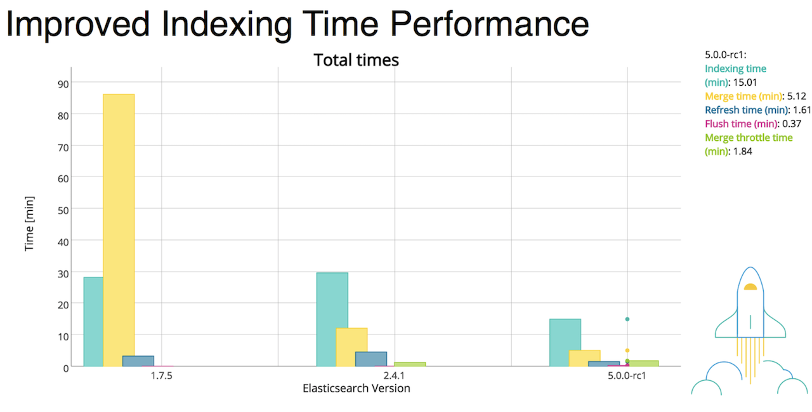
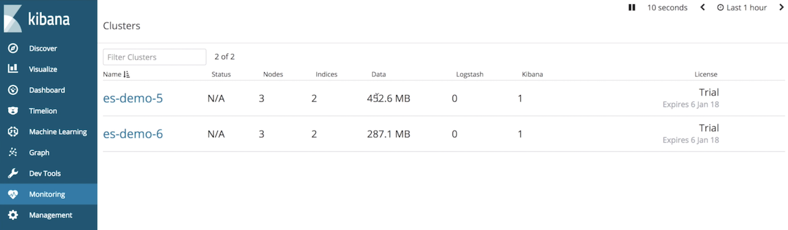
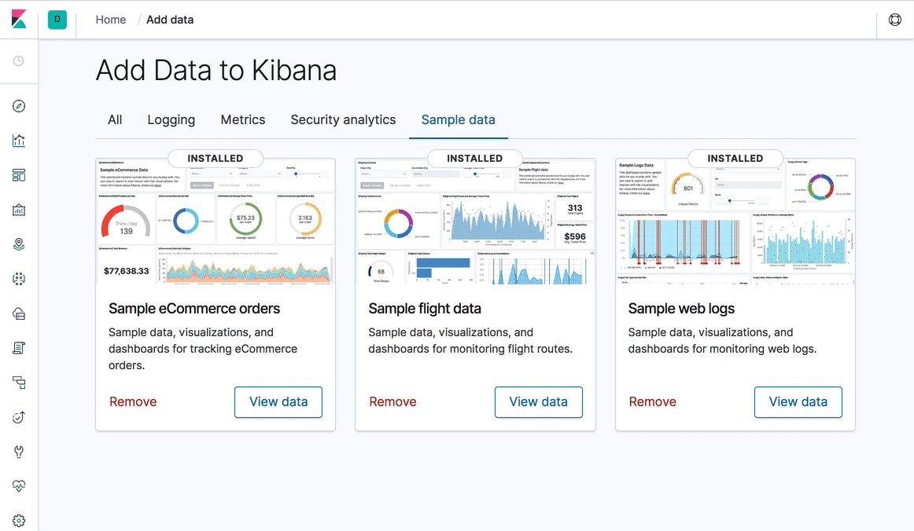

Elasticsearch, Kibana, Logstash, Beats 제품들을 개발하는 Elastic 사 에서는 이 4 제품들을 통틀어 Elastic Stack 이라고 부릅니다. 예전에 Beats가 생기기 전에는 ELK(Elsaticsearch, Logstash, Kibana) 스택으로 더 잘 알려져 있었는데 이 스토리는 https://www.elastic.co/kr/elk-stack 페이지에서 좀 더 자세히 보실 수 있습니다.
Elastic Stack은 5.0 부터 ELKB 제품들의 버전을 모두 일치시키면서 같이 릴리즈를 해 왔습니다. 여느 소프트웨어 제품들과 마찬가지로 Elastic Stack 제품들은 6.5.1 처럼 메이져.마이너.버그픽스 규칙으로 넘버링이 됩니다. 하지만 보통 Elastic Stack은 마이너 버전에서 기능들이 추가 되고 메이져 버전은 색인, 검색 성능 및 안전성의 개선에 초점을 맞추기 때문에 오히려 기능들이 Deprecated 되거나 Expire 되는 경우가 많습니다. 메이져 업데이트의 경우 Elasticsearch 가 핵심으로 사용하는 Lucene(루씬) 의 메이져 버전과 같이 업데이트 하기 때문에 데이터의 저장 방식이 바뀐다거나 탐색 또는 스코어링 공식이 바뀌는 등의 구조적인 변화가 있기 때문에 이전 버전에서 지원하던 기능이 더 이상 지원되지 않는 경우가 많기 때문입니다.
5.0 버전 부터 그 동안 있었던 주요 변경점을 간단히 살펴보면 다음과 같습니다. 상세한 내용은 공식 홈페이지의 릴리스 블로그 포스트 (https://www.elastic.co/blog/category/releases) 에서 모두 살펴보실 수 있습니다.
Elastic Stack 5.x
5.x 에서는 상용 플러그인인 X-Pack 출시와 Elastic Cloud Enterprise 같은 로드맵의 발표, 그리고 BKD-Tree를 이용한 IP, Geo 등의 연산 및 색인속도의 상승이 가장 주요한 포인트였습니다.

- 5.0 : X-Pack, Ingest Node, Painless 스크립트 언어, BKD-Tree 를 이용한 half-float 등의 구조 추가및 성능 향상, 기본 검색으로 BM25 사용, 운영 환경에서 부트스트랩 체크, Kibana 전반적인 디자인 변경 등
- 5.3 : Cross Cluster Search, Logstash의 Persistent Queues (디스크 큐), Logstash 모니터링, Beats 모듈
- 5.4 : 머신러닝 기능 추가
- 5.6 : 6.0 으로 롤링 업그레이드를 위한 마이그레이션 도구 지원
Elastic Stack 6.x
6.x 은 sparse fields 를 개선한 디스크 저장 효율 개선, Sequence ID를 이용한 리커버리 효율 개선, 5.6 에서 6.x 으로 중단 없는 롤링 업그레이드가 가장 주요한 포인트였습니다. 그리고 시스템 안정성 때문에 Type 을 하나로 제한하는 변화가 있었습니다. 그 외에도 점차 스택에서 솔루션 으로 제품 컨셉이 변경이 되면서 각 마이너 버전 마다 추가되는 기능들이 많았습니다.

- 6.0 : type을 한개만 쓸 수 있도록 제한, 롤링 업그레이드, Sequence ID를 이용한 리커버리, sparse fields, Kibana 디자인이 색약자들을 고려한 형태로 변경 등
- 6.1 : APM 출시
- 6.2 : SAML 연동 인증, Beats 모니터링, Kibana의 Vega 시각화 도구 추가
- 6.3 : X-Pack 소스코드 공개 및 통합, 기본 배포판에 X-Pack Basic 탑재. 기본 배포 방식이 바뀌어서 6.2 –> 6.3 으로 업그레이드 하는 것이 오히려 5.6 –> 6.0 으로 업그레이드 하는 것 보다 복잡해졌습니다. 이에 따른 설정 방법은 관련 블로그 포스트 에서도 설명했습니다. 그 외에도 Elasticsearch SQL, Rollups 기능이 추가되었습니다.
- 6.4 : 다른 기능은 큰 변경이 없지만, 저희 입장에서는 한국어 형태소 분석기인 노리가 출시되었기 때문에 큰 의미가 있는 릴리즈였습니다.
- 6.5 : 클러스터간 복제(Cross Cluster Replication), Kibana에 Infra, Log 앱 추가, Beats 중앙 관리 기능 등
- 6.6 : 프로즌 인덱스, Kibana에서 Index Lifecicle 관리 UI 등. 그리고 정식 릴리즈에 포함된 것은 아니지만 이 시기에 Elastic Map Service 에 한국 시군구 지도를 추가했습니다.
- 6.7 : Kibana 지도 확장 기능 및 Uptime 앱 추가.
Elastic Stack 7.0
그리고 2019년 4월 7.0 버전이 출시되었습니다. 7.0 출시는 이전의 5.0, 6.0 출시 때와 비교하면 얌전하게 출시된 것 같습니다. 예전에는 메이져 버전이 출시되면 홈페이지도 전면적으로 개편하고 라이브 출시 행사도 하고 했었는데 말이죠. 7.0 에서 반영된 주요 기능들은 다음과 같습니다. 여느 메이져 버전때와 마찬가지로 7.0 에서는 기본적인 성능과 안전성 향상에 주요 포인트를 두고 있습니다.
Elasticsearch
- Java High-Level Rest Client의 모든 기능이 완성되었습니다. 8.0 에서 transport client 는 제거됩니다.
- Adaptive Replica Selection 이 7.0 부터 디폴트로 됩니다. Replica가 여러개가 있으면 더 빠른 Replica를 능동적으로 찾아 쿼리합니다.
- Cross Cluster Search를 할 때 여러 원격 클러스터를 통합 검색할 때 라운드 트립을 최소화 시켜 성능을 향상시킵니다.
- Refresh Interval이 기존에는 리프레시 간격이 기본 1초로 설정되어 실시간에 가까운 검색 기능을 제공했지만 이제는 (디폴트로 30초 동안) 검색 요청이 없으면 search idle 샤드로 설정하고 다음 검색 요청이 올 때 까지 리프레시가 잠정적으로 중지됩니다. 이는 색인 성능을 비약적으로 상승시킵니다.
- Minimun Master Node 설정이 자동화됩니다. 이제 Quorum (Split Brain) 때문에 마스터 후보 노드의 1/2+1 값을 따로 설정하지 않아도 마스터 후보 노드가 추가되거나 제거될 때 이 값이 자동으로 설정됩니다.
- Faster Top-k Retrieval 가 적용되어 단순한 쿼리를 할때 전체 도큐먼트가 아닌 top 10,000개의 도큐먼트에서 쿼리를 합니다. total hit 수와 스코어가 변하지만 쿼리 결과는 그대로이며 쿼리 속도가 약 10배 가량 향상됩니다. 정확한 hit 수를 가져와야 하는 쿼리나 aggregation 에는 적용되지 않습니다.
- 디폴트 Primary Shard 개수가 5 에서 1로 변경됩니다.
- Open JDK 가 기본 번들로 포함되어 Java를 따로 설치하지 않아도 실행이 됩니다.
기본 설정 중에서 특히 중요한 디스커버리 설정하는 부분이 바뀌었습니다. 예전처럼
discovery.zen.ping.unicast.hosts:로 하시면 안되고요discovery.seed_hosts:로 설정 해야 합니다.discovery.zen.minimum_master_nodes설정도 없어지고 대신cluster.initial_master_nodes:설정에 있는 master eligible nodes 들 중에서 과반수 이상이 살아있어야 클러스터가 정상적으로 실행되도록 변경되었습니다. 자세한 내용은 도큐먼트를 참고하세요.
https://www.elastic.co/guide/en/elasticsearch/reference/7.0/discovery-settings.html
Kibana

- Kibana에 새로운 UI 템플릿 셋트가 적용되었습니다.
- 다크 테마가 추가되었습니다.
- 대시보드에 반응형 디자인을 적용해서 되어 모바일 화면에서도 잘 보입니다.
- Kibana Query Language가 디폴트로 적용됩니다.
- 확장된 Time Picker가 적용됩니다.
API 변경
사실 추가된 기능들 보다 신경 쓰이는 것들은 기존에 쓰던 방식의 API의 변경 입니다. API 변경에 대한 토론은 해당 깃헙 이슈 에서 보실 수 있습니다.
7.0을 사용하려면 클라이언트 프로그램들을 새로운 API에 맞게 수정 해야 하기 때문에 업그레이드가 망설여 지는 것이 사실입니다. 특히 6.0 때 부터 예고되었던 Type 구조의 삭제 때문에 걱정 하시는 분들이 많을 것입니다. 알아보기 편하게 7.0 버전에서 변경된 API들을 아래 정리 해 보았습니다.
| Search API | 6.x 이전 | 7.0 이후 |
|---|---|---|
| search | /{index}/{type}/_search | {index}/_search |
| msearch | /{index}/{type}/_msearch | /{index}/_msearch |
| count | /{index}/{type}/_count | /{index}/_count |
| explain | /{index}/{type}/{id}/_explain | /{index}/_explain/{id} |
| search template | /{index}/{type}/_search/template | /{index}/_search/template |
| msearch template | /{index}/{type}/_msearch/template | /{index}/_msearch/template |
| Document API | 6.x 이전 | 7.0 이후 |
|---|---|---|
| index | /{index}/{type}/{id} | /{index}/_doc/{id} |
| delete | /{index}/{type}/{id} | /{index}/_doc/{id} |
| get | /{index}/{type}/{id} | /{index}/_doc/{id} |
| update | /{index}/{type}/{id}/_update | /{index}/_update/{id} |
| get source | /{index}/{type}/{id}/_source | /{index}/_source/{id} |
| bulk | /{index}/{type}/_bulk | /{index}/_bulk |
| mget | /{index}/{type}/_mget | /{index}/_mget |
| termvectors | /{index}/{type}/{id}/_termvector | /{index}/_termvector/{id} |
| mtermvectors | /{index}/{type}/_mtermvectors | /{index}/_mtermvectors |
| Index API | 6.x 이전 | 7.0 이후 |
|---|---|---|
| create index | /{index} | 변경 없음 |
| get mapping | /{index}/_mapping/{type} | /{index}/_mapping |
| put mapping | /{index}/_mapping/{type} | /{index}/_mapping |
| get field mapping | /{index}/{type}/_mapping/field/{fields} | /{index}/_mapping/field/{fields} |
| get template | /_template/{template} | 변경 없음 |
| put template | /_template/{template} | 변경 없음 |
Search 그리고 Index API 에서는 type 을 입력하던 부분을 모두 생략한다고 생각 하면 될 것 같습니다. Document API 에서를 type 이 들어가던 부분을 지정자 _doc 로 대치하면 대부분 적용됩니다. 그리고 제가 테스트 해 본 결과 Document API 의 경우에는 7.0 에서 /{index}/_update/{id} 대신 /{index}/_doc/{id}/_update 처럼 과거 형식으로 입력을 해도 정상적으로 실행이 됩니다.
5.x 에서 업그레이드를 할 때 다중 type을 단일 type으로
사실 큰 문제는 5.x 이전 버전에서 한 인덱스에 여러 타입을 사용중인 경우 일 것입니다. 이 경우는 어쩔 수 없이 Logstash 또는 _reindex API를 이용해서 구조를 변경해서 새로 재 색인을 해야 합니다. 이에 관한 가이드는 Removal of mapping types 페이지에서 볼 수 있습니다. 좀 더 팁을 드리자면 다음과 같은 경우들로 구분해서 생각을 해 볼 수 있을 것 같습니다.
type 별로 다른 매핑을 사용하는 경우
이때는 각각의 type 별로 새로운 인덱스를 만들어야 할 것입니다. 예를 들어 아래와 같이 my_index 라는 인덱스에 type_1, type_2 두개의 타입이 있는 경우PUT my_index
{
"mappings": {
"type_1": {
"properties": {
...
}
},
"type_2": {
"properties": {
...
}
}
}
}
아래 처럼 타입 별로 인덱스를 나누어 생성하고 데이터를 재색인 해야 합니다.PUT my_index-type_1
{ ... }
PUT my_index-type_2
{ ... }
Logstash 의 입/출력 설정은 다음과 같이 설정해서 재색인이 가능합니다.input {
elasticsearch {
hosts => "http://10.0.0.1:9200"
index => "my_index"
query => '{ "query": { "query_string": { "query": "*" } } }'
size => 500
scroll => "5m"
docinfo => true
}
}
output {
elasticsearch {
hosts => ["http://10.0.0.2:9200"]
index => "my_index-%{[@metadata][_type]}"
}
}
type 별로 매핑이 거의 유사한 경우. 단 동일한 도큐먼트 ID가 존재하지 않아야 함.
이 경우는 한 인덱스로 매핑을 병합해서 사용할 수 있을 것입니다. 다음과 같이 my_index 안에 type_1 에는 name, age, gender, 그리고 type_2 에는 name, age, address 라는 필드가 생성되어 있다고 가정을 하면PUT my_index
{
"mappings": {
"type_1": {
"properties": {
"name": ...
"age": ...
"gender": ...
}
},
"type_2": {
"properties": {
"name": ...
"age": ...
"address": ...
}
}
}
}
아래와 같이 하나의 my_index 인덱스에 name, age, gender, address 를 병합하는 매핑을 생성합니다.PUT my_index
{
"mappings": {
"properties": {
"name": ...
"age": ...
"gender": ...
"address": ...
}
}
}
만약에 type의 이름이 유의미한 값이었다면 type의 이름도 하나의 필드 값으로 만들어 저장하면 됩니다.PUT my_index
{
"mappings": {
"properties": {
"type": ... # <-- "type_1" 또는 "type_2" 입력
"name": ...
"age": ...
"gender": ...
"address": ...
}
}
}
이 경우 Logstash 의 입/출력 설정은 다음과 같이 해서 재색인이 가능합니다.input {
elasticsearch {
hosts => "http://10.0.0.1:9200"
index => "my_index"
query => '{ "query": { "query_string": { "query": "*" } } }'
size => 500
scroll => "5m"
docinfo => true
}
}
filter {
mutate {
add_field => { "type" => "%{[@metadata][_type]}" }
}
}
output {
elasticsearch {
hosts => ["http://10.0.0.2:9200"]
index => "my_index"
}
}
한 인덱스 안에 parent - child 구조로 type 이 나뉘어 있는 경우
이 경우와 관련해서는 예전의 Elasticsearch 6.x 에서의 join 사용 포스트를 참고하시기 바랍니다.